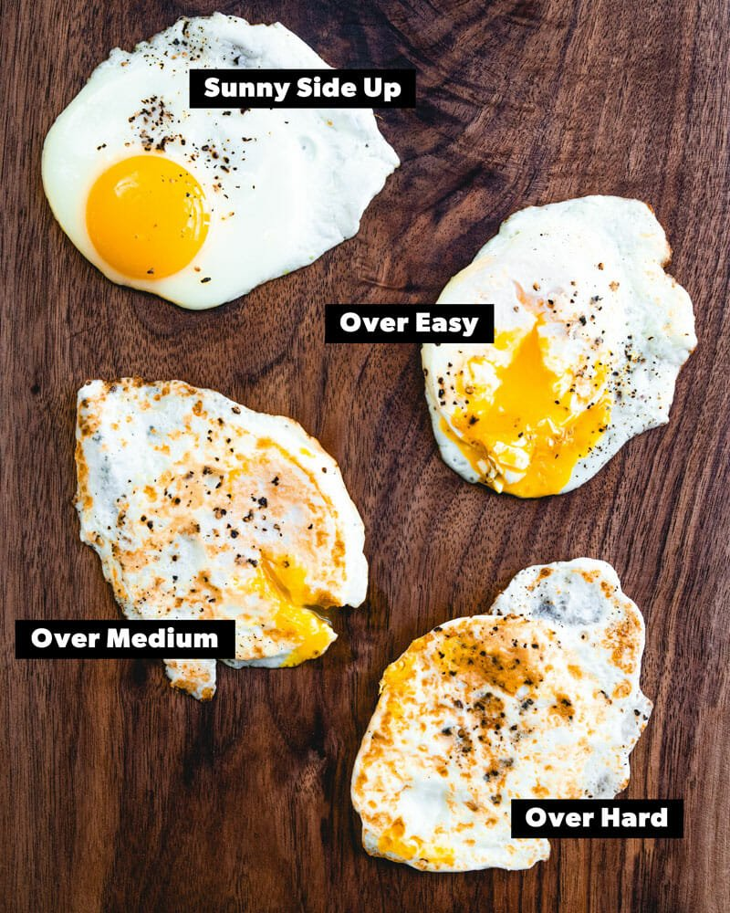

Fried Egg

Description
Fried eggs are tasty and easy to make. Let's get started!
Ingredients
- Egg
- Butter (or an alternative non-stick solution)
Steps
- Put a small pat of butter on a frying pan
- Heat the pan to medium or medium-low heat
- When the butter has melted, crack an egg onto the frying pan
- Heat until the egg has cooked enough to no longer be liquid
- Flip the egg and wait 30 seconds to 1 minute, depending on preference
- Enjoy your fried egg!